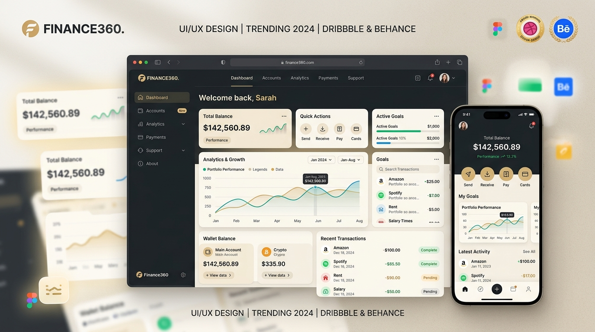
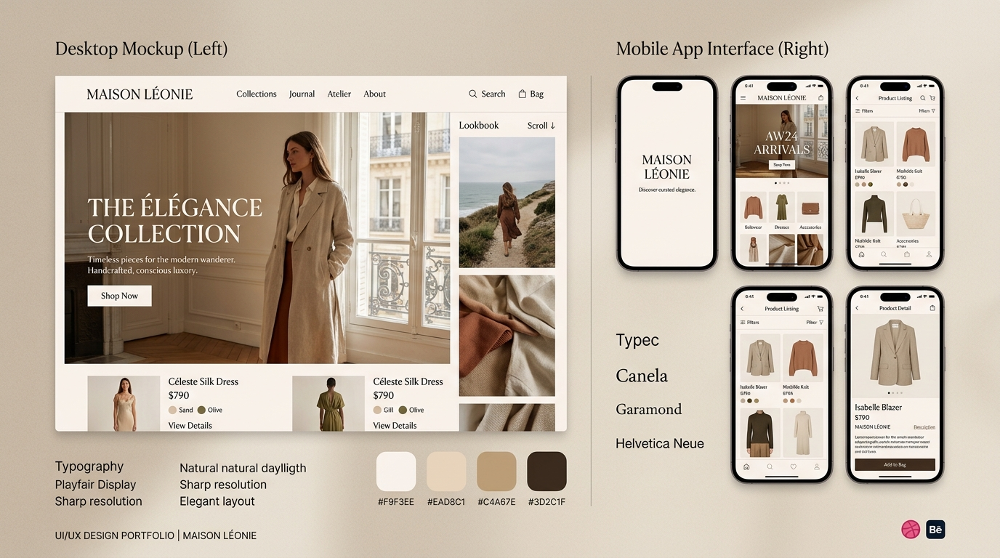

Finance360 Analytics
Fintech & SaaS
RoleLead Designer
Impact+140% Retention
Membangun karier remote, hidup bebas, & menghasilkan secara global dari mana saja.
Mulai Perjalanan WFA →Tiga jalur terarah yang didesain khusus berdasarkan perjalanan karier saya untuk membantu Anda berkarier remote, berkolaborasi bisnis, atau menguasai ekosistem WFA.

Update lowongan kerja remote terverifikasi dari perusahaan global bergaji USD. Tersedia untuk UI/UX, Developer, VA, dll.

Terbuka untuk kemitraan bisnis, kontrak desain antarmuka, UX audit, dan konsultasi strategi startup digital.

Pelajari mindset remote worker, bangun portofolio internasional, dan kuasai teknik lolos interview remote bersama saya.
Sebagai Content Creator dan Pekerja WFA, saya membangun solusi digital kreatif yang berfokus pada audiens, retensi pengguna, dan pengalaman visual yang memukau.
Merancang antarmuka website dan aplikasi mobile yang estetis, fungsional, dan sesuai dengan tren desain global modern.
Membangun komponen desain yang terstruktur dan scalable untuk memastikan konsistensi visual di seluruh ekosistem produk Anda.
Mengevaluasi produk digital Anda saat ini dan memberikan rekomendasi strategis untuk meningkatkan conversion rate dan engagement.
Karya desain produk digital yang dikerjakan 100% secara jarak jauh untuk klien dan perusahaan teknologi berskala global.


Saya memulai karier dari studio desain lokal sebelum beralih 100% ke dunia remote work pada tahun 2020. Kini, saya mendesain produk bernilai tinggi untuk klien global dan mendampingi talenta Indonesia menjadi Pekerja WFA.
Let's Connect →Menganalisis audiens target, tren terkini, dan nilai unik brand Anda untuk merumuskan konsep konten yang relevan dan memiliki potensi viralitas tinggi.
Proses eksekusi mulai dari copywriting persuasif, desain visual premium, hingga editing yang memastikan standar estetika tetap terjaga.
Mempublikasikan konten melalui kanal yang tepat dan membangun engagement organik dengan komunitas pengikut WFA untuk menjaga retensi.
Mengevaluasi insight dan metrik performa konten secara berkala untuk terus menyempurnakan strategi di kampanye berikutnya.
Tergantung pada kompleksitas aplikasi/website Anda. Sebuah landing page biasanya memakan waktu 1-2 minggu, sementara aplikasi utuh (mobile/web) bisa memakan waktu 4-8 minggu dari riset hingga finalisasi.
Ya, WFA JOB memiliki newsletter gratis yang berisi daftar pekerjaan remote terkurasi setiap pekannya. Pekerjaan ini diseleksi agar terhindar dari lowongan palsu/scam.
Siapa saja yang ingin transisi dari kerja kantoran ke remote work global. Sangat direkomendasikan bagi Designer, Developer, Marketer, atau Virtual Assistant yang sudah memiliki skill dasar.
Masih ragu untuk berkolaborasi atau ikut belajar WFA? Temukan jawabannya di sini.
Mari Bertumbuh
Bersama.
Dapatkan insight rutin seputar produktivitas, pembuatan konten, dan kebebasan finansial lewat jalur WFA.